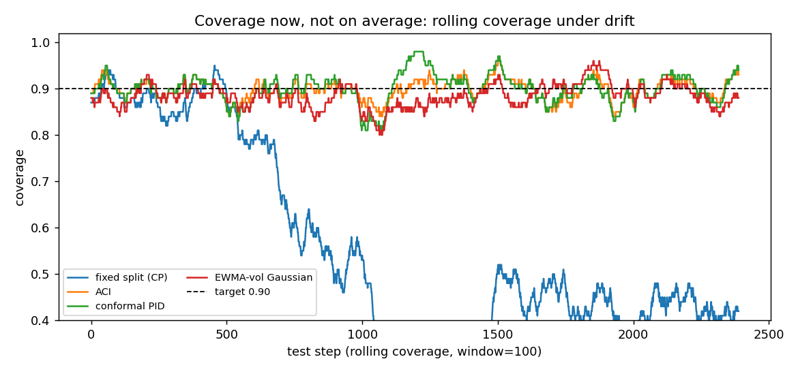
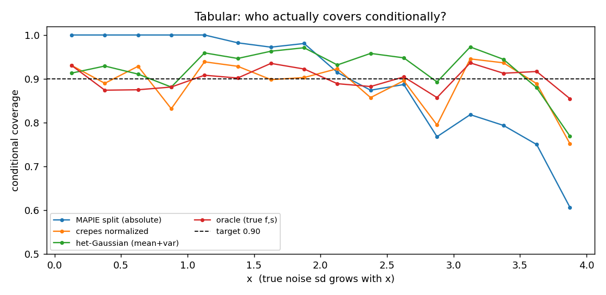

A cautionary example
Using conformal wrappers: a worked example
Do MAPIE, crepes, and the time-series conformal methods actually help? One controlled experiment on synthetic data.
The experiment runs the real libraries (MAPIE, crepes) and the strong time-series methods (ACI, AgACI, conformal PID, NexCP/weighted, EnbPI) in their intended modes, against plain probabilistic baselines and, since the data are synthetic with a known law, a true oracle. Everyone is scored on conditional coverage, interval efficiency, and proper scores (interval/Winkler, CRPS), not marginal coverage alone.
Code and full numbers: benchmark/. Means over 5 seeds, target coverage 0.90; compare within each table, not across.
Time series under drift

| method | family | marg. cov | worst-window | cond. gap | interval score ↓ | CRPS ↓ |
|---|---|---|---|---|---|---|
| oracle (true μ,σ) | oracle | 0.90 | 0.82 | 0.02 | 5.52 | 0.76 |
| skaters (Gaussian) | prob | 0.89 | 0.70 | 0.04 | 6.57 | 0.86 |
| skaters + norm. conformal | cp | 0.89 | 0.69 | 0.04 | 6.58 | – |
| EWMA-vol Gaussian | prob | 0.89 | 0.81 | 0.03 | 6.92 | 0.92 |
| conformal PID | cp | 0.90 | 0.82 | 0.01 | 7.00 | – |
| ACI | cp | 0.90 | 0.83 | 0.01 | 7.00 | – |
| true σ on biased μ̂ | oracle | 0.82 | 0.70 | 0.12 | 7.02 | 0.92 |
| NexCP (weighted) | cp | 0.88 | 0.70 | 0.05 | 7.08 | – |
| AgACI | cp | 0.86 | 0.78 | 0.06 | 7.15 | – |
| MAPIE EnbPI (online) | cp | 0.84 | 0.36 | 0.20 | 8.87 | – |
| MAPIE ACI | cp | 0.84 | 0.36 | 0.20 | 8.87 | – |
| GARCH(1,1) Gaussian | prob | 0.69 | 0.48 | 0.34 | 9.84 | 0.98 |
| skaters + split conformal | cp | 0.60 | 0.20 | 0.56 | 11.9 | – |
| fixed split (CP) | cp | 0.56 | 0.17 | 0.60 | 13.8 | – |
Heteroscedastic regression

| method | family | marg. | cov low-var | cov hi-var | cond. gap | interval ↓ | CRPS ↓ |
|---|---|---|---|---|---|---|---|
| oracle (true f,s) | oracle | 0.90 | 0.90 | 0.90 | 0.02 | 6.39 | 0.88 |
| MAPIE CQR | cp | 0.90 | 0.92 | 0.89 | 0.03 | 6.51 | – |
| quantile GBR (no conformal) | prob | 0.89 | 0.90 | 0.88 | 0.03 | 6.52 | – |
| crepes normalized | cp | 0.90 | 0.92 | 0.87 | 0.04 | 6.85 | – |
| crepes CPS | cp | 0.91 | 0.92 | 0.88 | 0.04 | 6.86 | 0.90 |
| het-Gaussian (mean+var) | prob | 0.93 | 0.93 | 0.89 | 0.06 | 7.08 | 0.90 |
| MAPIE split (absolute) | cp | 0.90 | 1.00 | 0.73 | 0.17 | 8.32 | – |
| crepes standard | cp | 0.90 | 1.00 | 0.73 | 0.17 | 8.32 | – |
What this one example shows
- Adaptive wrappers behave well here. CQR and crepes normalized/CPS reach near-oracle interval score and good conditional coverage; ACI and conformal PID recover coverage under drift where fixed split collapses. None of these is a straw man.
- But the adaptivity comes from the conditional model, not the conformal step. The sharpest tell: raw quantile-GBR with no conformal at all (6.52) ties conformalized quantile regression (6.51). Vanilla split conformal is identical to a static Gaussian. The conformal layer supplies the finite-sample marginal certificate; the sharpness comes from the model it wraps.
- A plain probabilistic model keeps pace on the proper score and returns a full distribution. An EWMA-vol Gaussian matches the conformal repairs on interval score (6.92 vs ~7.0); crepes CPS gets competitive CRPS because it is doing conditional distribution estimation.
- The author’s own forecaster behaves no differently.
thinking_fast_and_slow, a timemachines skater that blends two EMAs into an adaptive predictive mean and standard deviation, lands at near-oracle CRPS (0.86) and the best non-oracle interval score (6.57). Conformalizing it changes nothing for the better: a fair adaptive (normalized) wrap re-levels coverage to 90% at an identical score (6.58), while a naive split-conformal wrap on the drifting series collapses to 60%. The value was already in the density it estimates, not in the conformal step. - None achieves per-step conditional coverage, even the oracle’s worst window is ~0.82. The repairs deliver long-run/marginal coverage, never coverage now, consistent with the no-go results.
The lesson, not a leaderboard. Conformal prediction’s marginal certificate is real and useful, but it is not distributional quality. Where a conformal wrapper is sharp, it is sharp because of the conditional model underneath; the conformal step adds the coverage guarantee on top. That is the mechanism this toy is built to expose, the empirical face of the paper’s residual-information gap.
Using conformal prediction in your own project? Tell Claude: “Read https://conformalprediction.net/SKILL.md and create a project skill from it.” It adds a check for whether your coverage is conditionally trustworthy.